Воздухоочиститель BORK A501
Эффективные технологии очищения воздуха в компактном корпусе.
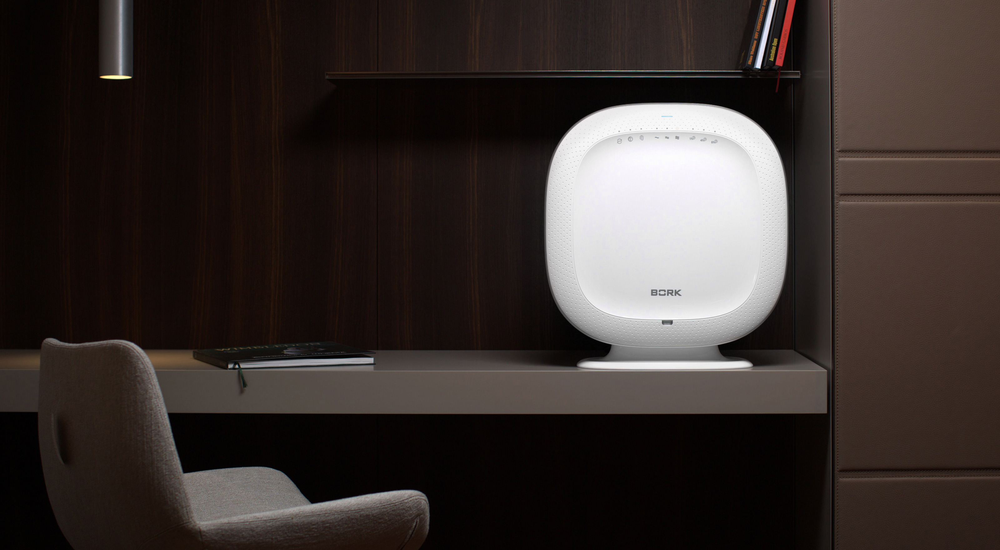Настенное крепление
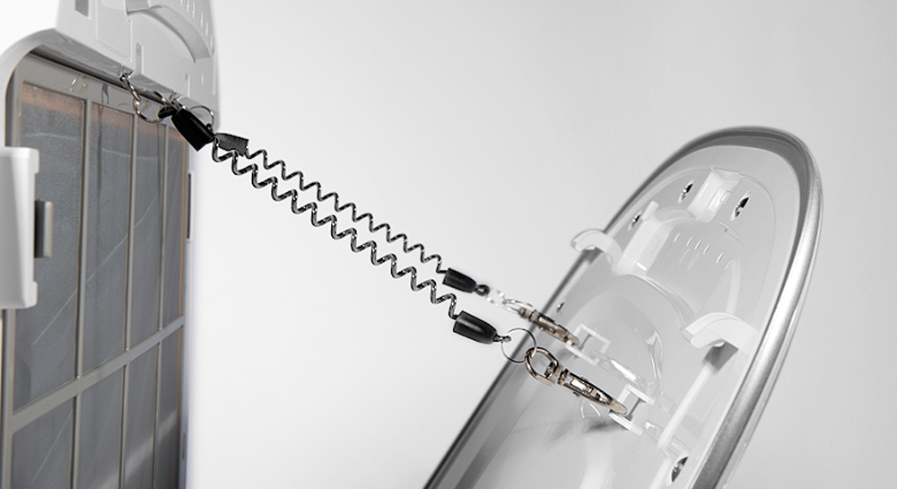Модель A501 является одним из самых компактных очистителей воздуха среди своих коллег. При этом несмотря на малые габариты, воздухоочиститель обладает безусловными преимуществами, среди, которых можно выделись применение новых систем очистки и обработки воздуха. Уже ставшее традицией в климатических системах BORK, большое внимание уделено комфорту пользователя. Модель A501 оснащена подвесной системой крепежей. Вы можете ставить воздухоочиститель не только на пол или журнальный столик, но и повесить на стену.
Активная стерилизация
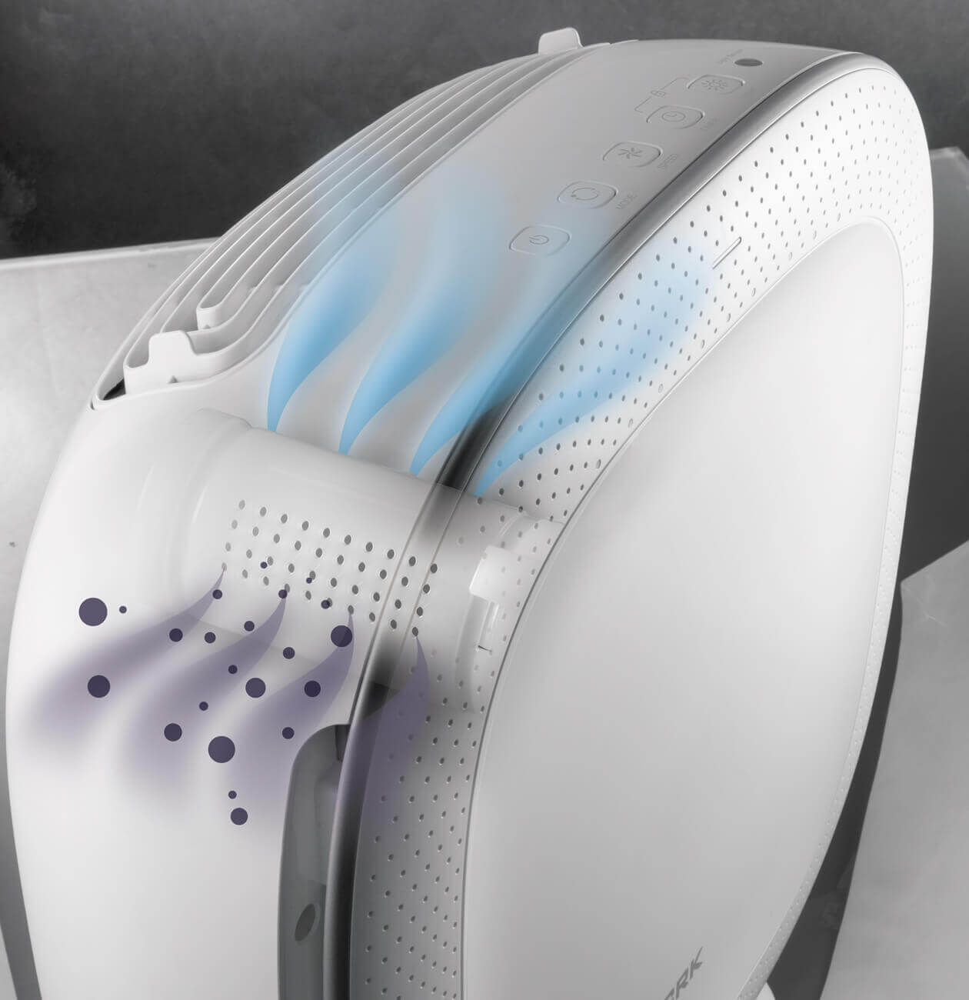Фильтр стерилизации воздуха содержит терпены — органические вещества, обладающие антибактериальными свойствами, растворяющие стенки клеток бактерий и разрушающие их структуру.
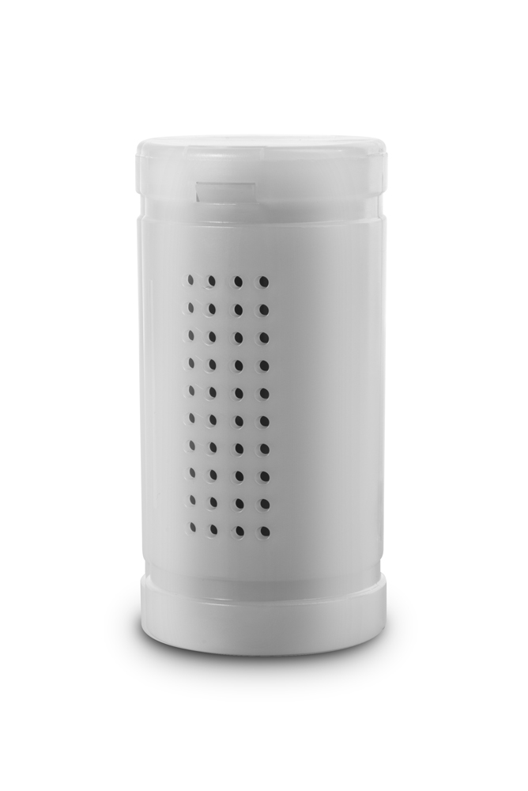Терпены — основной компонент смол и бальзамов, в больших количествах содержатся в хвойных растениях и эфирных маслах и являются главным ингредиентом фитонцидов.
Система фильтрации
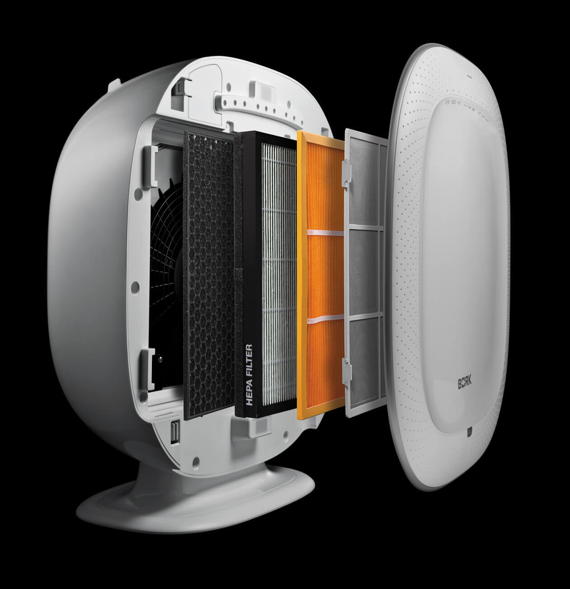Предварительный фильтр
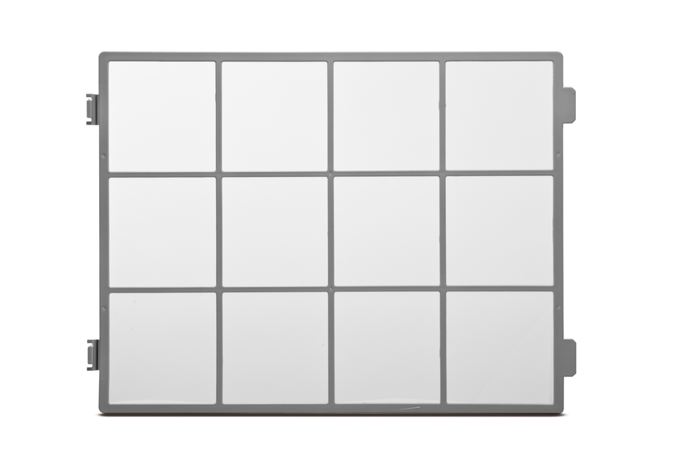Этот фильтр удаляет сравнительно большие частицы пыли или плесени, человеческие волосы и шерсть домашних животных.
Специальный фильтр

Система специальных фильтров максимально эффективно борется с наиболее вредными загрязнителями воздуха. В комплекте A501 фильтр Allergist.
Вы можете приобрести отдельно и установить любой из указанных ниже специальных фильтров.

Угольный фильтр из карболена
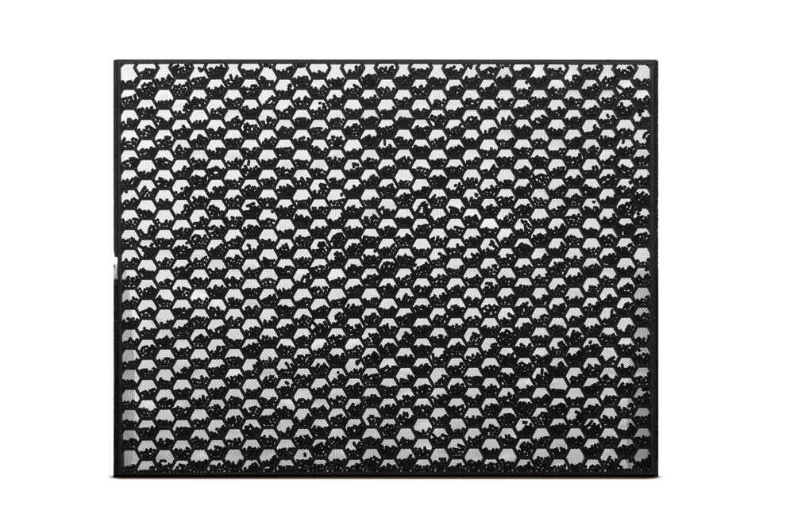Угольный фильтр устраняет летучие и полулетучие органические соединения, включая вредные газы, резкие запахи. Структура фильтра состоит из сот, что позволяет обеспечить максимальную эффективность очистки воздуха на всей поверхности фильтра. Толщина фильтра отличается от предыдущей серии угольных фильтров BORK.
HEPA-фильтр
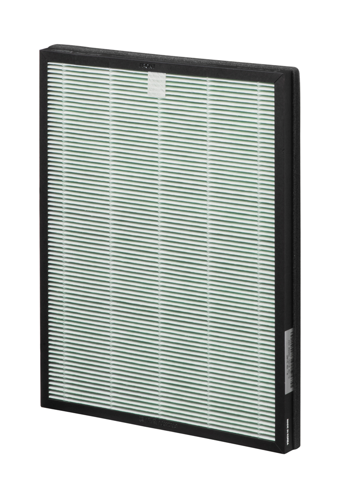Высокоэффективный True HEPA H13 поглощает пыль и запах табачного дыма, антибактериальная пропитка уничтожает микробы и плесень.
Панель управления
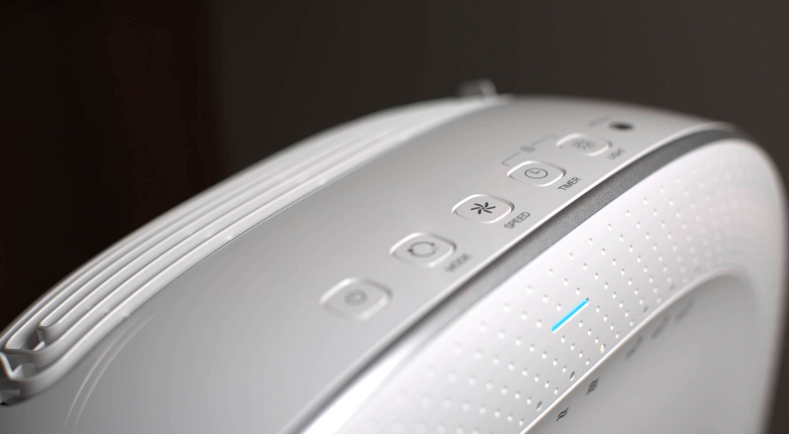Автоматический режим
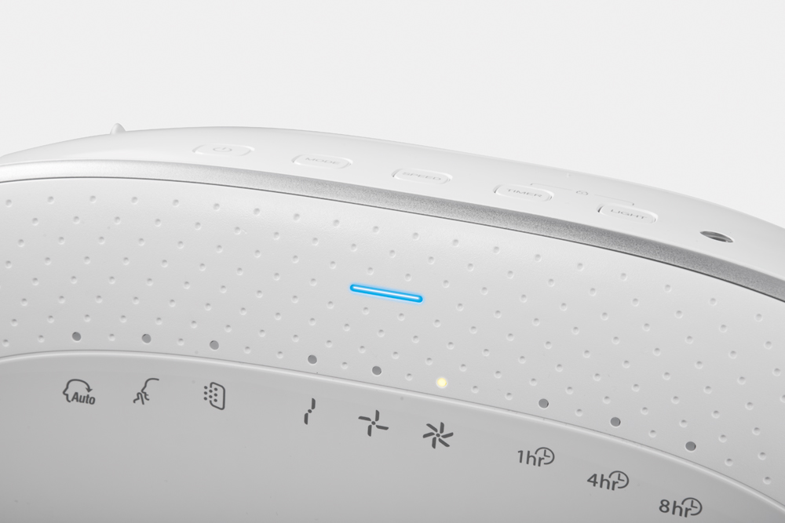В этом режиме автоматически контролируется скорость потока воздуха (скорости с 1,2 и 3) в соответствии с уровнем загрязнения, определяемым датчиком качества воздуха, с целью более эффективной очистки. Этот режим подходит для использования в качестве основного.
Индикатор качества воздуха
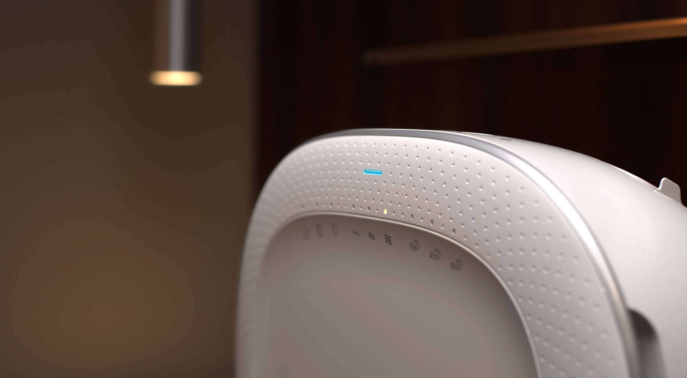Для визуального контроля воздухоочиститель оснащен цветовым индикатором уровня загрязнения воздуха.
Бесшумный режим
В бесшумном режиме скорость воздушного потока понижается до минимального уровня.
Режим «Защита от пыли»
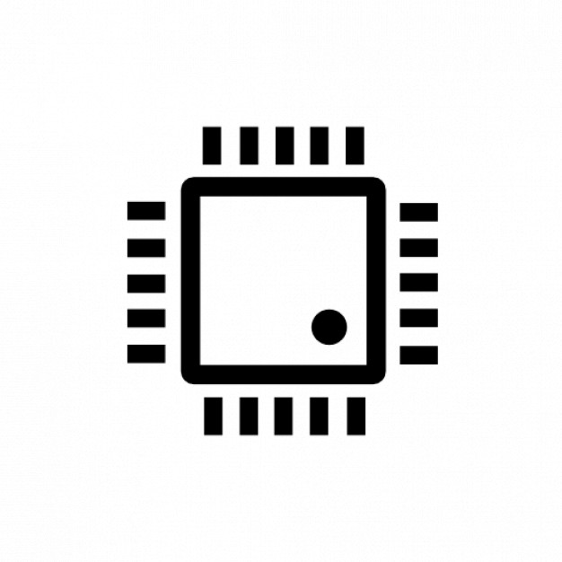Бытовая пыль является одной из причин возникновения аллергии. Режим «защита от пыли» запускает уникальный механизм автоматического чередования скоростей (10 мин первая скорость-10 мин третья скорость) воздушного потока, который позволяет эффективно удалять мельчайшие частицы пыли, обеспечивая идеальную чистоту в вашем доме.
Ночной режим
Доступен только в автоматическом режиме. При отсутствии освещения в помещении более 3 минут воздухоочиститель автоматически переключается в ночной режим, снижается скорость потока воздуха, уровень шума и потребления энергии.
При включении освещения более 5 минут воздухоочиститель возобновляет нормальную работу. В ночном режиме все индикаторы, кроме индикатора питания, выключаются.
Воздухоочиститель оснащен датчиками света. В зависимости от способа монтажа уровень чувствительности датчиков необходимо отрегулировать.
Режим замок от детей
Обеспечивает комфорт, удобство при эксплуатации воздухоочистителя.
Настройка датчика качества воздуха
Воздухоочиститель должен находиться в каждой комнате квартиры.
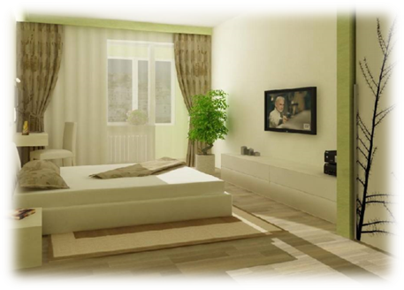Больше всего времени человек проводит в спальне. Чтобы во время сна дышать чистым воздухом рекомендуется установить датчик на самый чувствительный уровень.
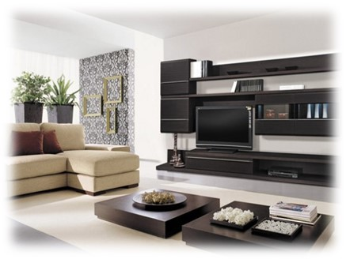Второе место, с точки зрения пребывания человека, занимает гостиная. Тут имеет смысл выбрать среднюю настройку чувствительности датчика.
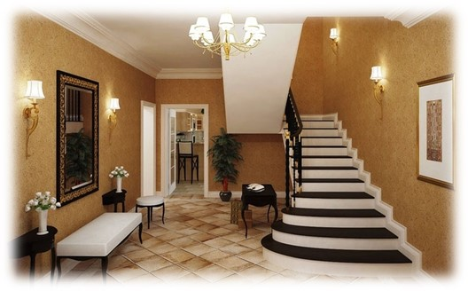И наконец, в прихожей и кухне можно выбрать самый низкий уровень чувствительности.
Если человек, приобретающий воздухоочиститель страдает от аллергии, то датчик загрязнения воздуха должен быть установлен на максимальную чувствительность, независимо от комнаты, в которой установлен прибор.
Аргументы для продажи
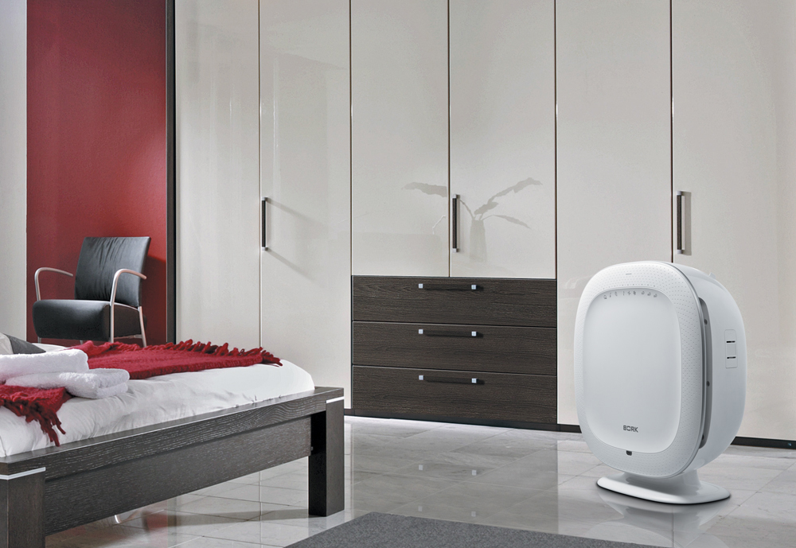- Самый компактный воздухоочиститель с многоступенчатой высокоэффективной очисткой воздуха
- Активная стерилизация. Терпены
- Возможность крепления на стену
- 5 специализированных климатических станций в 1. Специальные фильтры
- Удобное, простое и понятное управление
- Автоматические режимы работы
- Автоматический переход в ночной режим.
- Датчик света с возможностью регулировки
- Датчик качества воздуха с настройкой чувствительности. Воздухоочиститель для любого помещения.
- Отключение по таймеру.
- Замок от детей
Технические характеристики
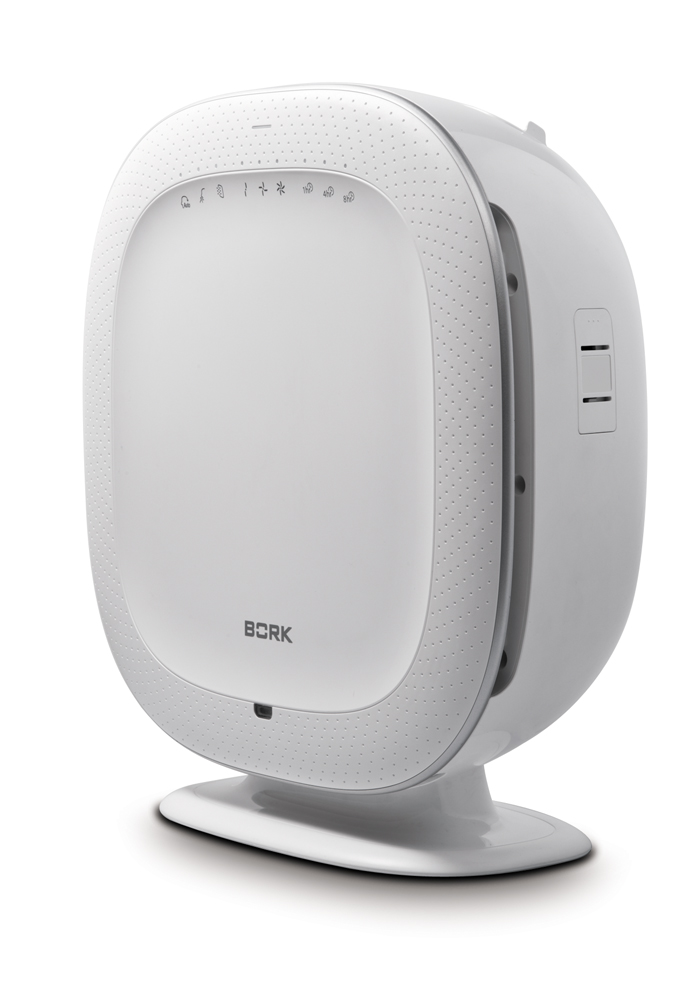
Напряжение: 220 В
Потребляемая мощность: 45 Вт
Производительность: 310 м²/ч
Материал Корпуса: Пластик
Тип управления: Электронное
Цвет: Белый
Вес: 6,4 кг
Гарантия: 1 год
Страна производитель: Корея